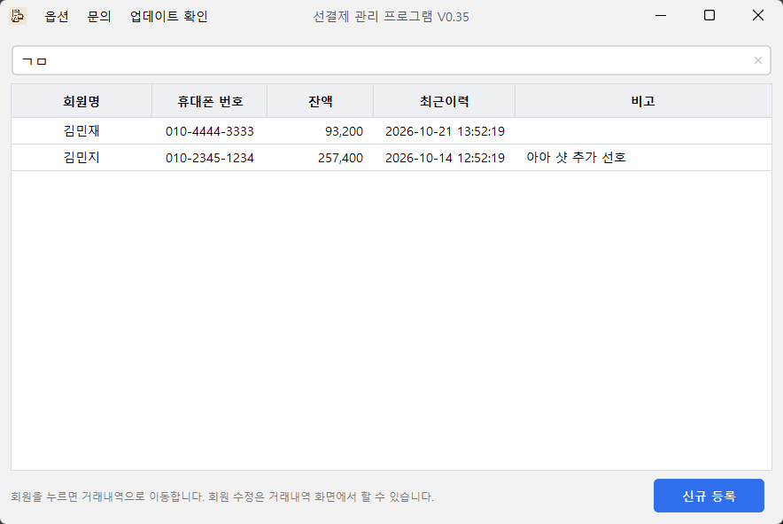
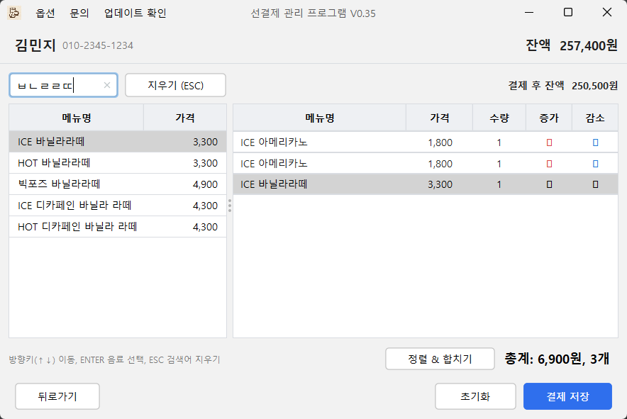
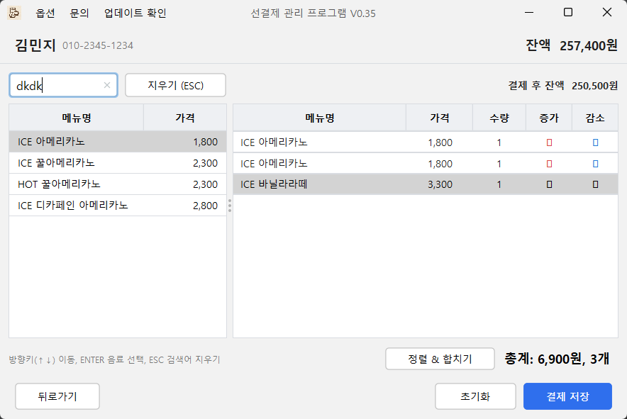
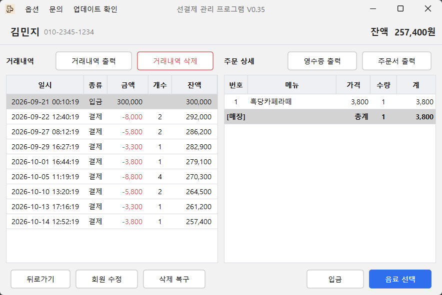
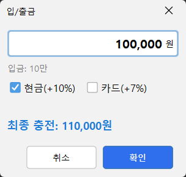
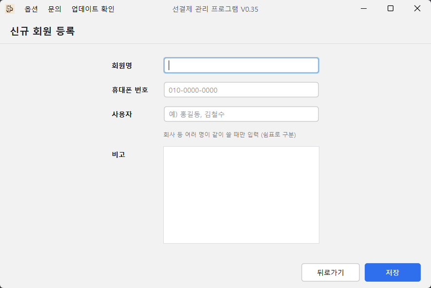
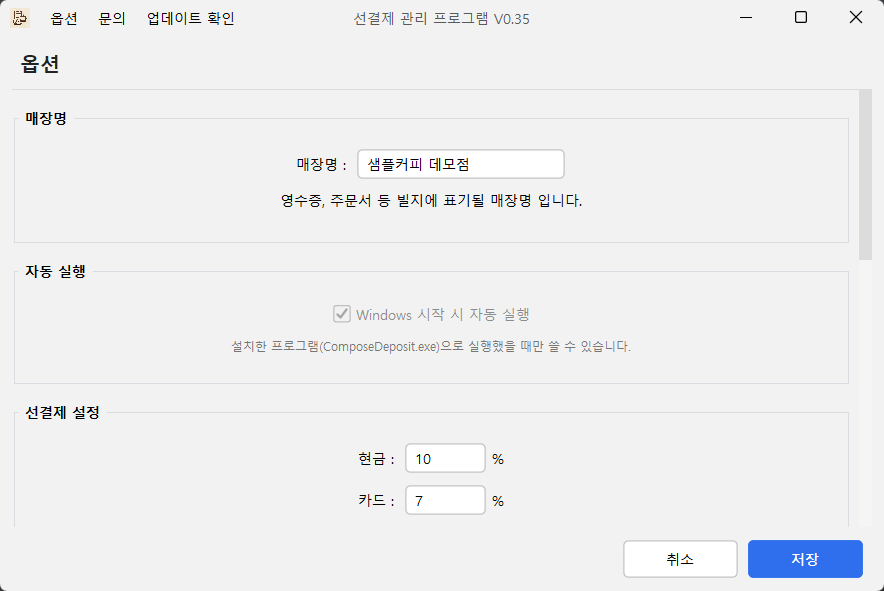
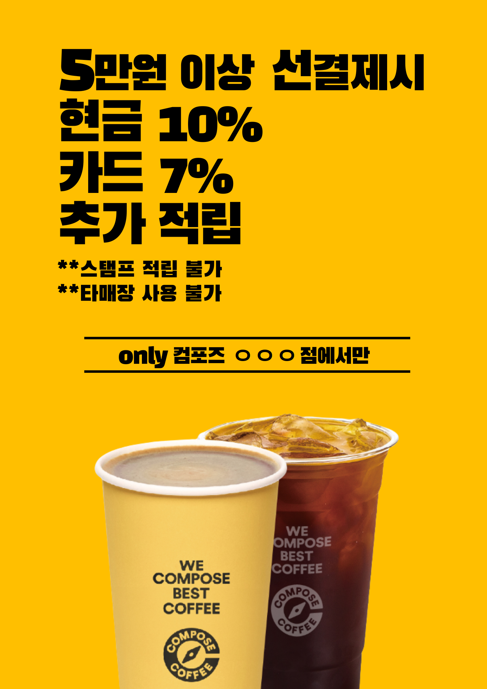

선결제 관리
종이 장부는 이제 그만. 단골 손님, 근처 회사, 단체의 선결제 잔액을 포스기 한 화면에서 찾고, 충전하고, 결제합니다.
포스기(Windows)에 설치 · 무료

이런 점이 좋아요
회원은 초성 두 글자면 찾아요
‘김민지’는 ㄱㅁ, 전화번호는 일부만 쳐도 됩니다. 최근에 온 손님이 위에 있어요.
회사·어린이집처럼 여럿이 쓰는 선결제는 공용 회원으로 만들고, 누가 썼는지 사람별로 남겨요.

메뉴 찾는 시간이 줄어요
손님이 부르는 말 그대로 찾습니다. 아아, 뜨아 같은 줄임말, ㅂㄴㄹㄹㄸ 같은 자음, 한/영을 잘못 눌러 dkdk로 쳐도 아이스 아메리카노가 나와요.
방향키로 고르고 Enter로 담고, Esc로 검색어를 지워요. 마우스 없이 됩니다.

한/영 실수도 알아서
한글 자판이 영어로 되어 있어도 고칠 필요 없어요. 쳐 둔 그대로 메뉴를 찾아 줍니다.

거래 내역이 한눈에
충전과 결제, 그때그때 잔액, 무엇을 마셨는지까지 남아요. 거래내역·영수증·주문서를 영수증 프린터로 출력할 수 있어요.
실수로 지운 거래는 [삭제 복구]로 되돌립니다.

충전 추가금은 자동 계산
금액을 치면 ‘10만’처럼 한글로 다시 보여 줘서 0을 하나 더 치는 실수를 막아요. 현금·카드에 따라 추가 적립을 계산해 최종 충전액을 보여 줍니다.
추가 비율과 적용 기준 금액은 옵션에서 정해요. 출금은 앞에 - 를 붙여 입력합니다.

설치 방법
포스기에서 순서대로 따라 하세요.
-
포스기에서 이 페이지 열기
포스기 인터넷 창 주소창에 아래 주소를 입력하고, 목록에서 선결제 관리를 누르세요.
https://coffee-manager.github.io/compose-apps
-
[설치 파일 받기] 누르기
compose-deposit-setup.exe 파일이 내려받아집니다.
브라우저가 “자주 다운로드되는 파일이 아닙니다”라고 하면 파일 옆 ⋯ → 유지를 누르세요.
-
받은 파일 실행
다운로드 목록이나 ‘다운로드’ 폴더에서 파일을 두 번 누르세요.
파란 Windows의 PC 보호 창이 뜨면 추가 정보 → 실행을 누르세요. 개인이 만든 프로그램이라 인증서가 없어서 나오는 안내예요.
-
[다음] → [설치]
관리자 권한은 필요 없어요. 기본으로 D:\Deposit에 설치됩니다.
-
처음 실행할 때 매장명 입력
영수증과 주문서에 찍힐 이름이에요. 나중에 옵션에서 바꿀 수 있어요.
예전 압축파일(zip) 버전을 쓰셨다면 예전 프로그램을 끄고 설치하세요. 회원과 거래 기록은 그대로 이어집니다.
사용 방법
회원 등록
회원 목록에서 [신규 등록]. 이름과 전화번호, 메모를 넣어요. 여럿이 쓰는 회사라면 사용자 이름을 같이 적어 공용 회원으로 만드세요.

충전 → 결제
회원을 누르면 거래내역이 열립니다. [입금]으로 충전하고, [음료 선택]에서 메뉴를 담아 [결제 저장]을 누르면 잔액에서 빠져요.
프린터 연결
[옵션] → 프린터에서 영수증 프린터를 고르세요. 결제할 때 주문서·영수증을 자동으로 뽑게 할 수도 있어요.
백업
프로그램을 끌 때 [백업 후 종료]를 고르거나 옵션의 [백업]을 누르면 백업 파일을 저장해요(기본 위치는 바탕화면). 포스기를 바꿀 때 옵션의 [복원]으로 그대로 옮깁니다.

홍보물
선결제는 단골을 만드는 좋은 방법이에요. 근처 회사 법인카드, 단골 손님, 지인·단체 선물용으로 많이 씁니다.


자주 묻는 질문
회원 기록은 어디에 저장되나요?
이 포스기 안(사용자 폴더의 compose\deposit\data)에만 저장돼요. 인터넷으로 보내지 않습니다. 포스기 고장에 대비해 가끔 [백업 후 종료]로 백업해 두세요.
새 버전으로 업데이트하면 기록이 지워지나요?
아니요. 프로그램만 바뀌고 회원·거래 기록과 설정은 그대로예요.
영수증이 출력되지 않아요
[옵션] → 프린터에서 영수증 프린터를 다시 골라 저장해 보세요. 그래도 안 되면 프린터 이름과 화면 사진을 개발자 문의로 보내 주세요.
잘못 저장한 결제를 지우고 싶어요
거래내역에서 해당 줄을 고르고 [거래내역 삭제]. 다시 살리려면 [삭제 복구]를 누르세요.
그 밖의 문제
개발자 문의로 알려 주세요. 화면 사진을 같이 보내 주시면 더 빨리 도와드릴 수 있어요.